自定义分析器
自定义分析器是一段简短的 JavaScript 程序。它读取文档的语法分析，从中找出你需要的段落。你在窗口 ▸ 分析器中编写脚本，LemmaLoom 在为你所有项目中所选语言的文档建立索引时运行它。分析器找到的内容与各个文档关联存储。之后，你可以通过分析器的透镜查看这些发现，为它们自动编码，也可以在查询中统计和比较它们。
有些问题取决于语法，而内置透镜又无法以你需要的形式回答，分析器就用于这类问题。只回答一个问题时，查询更快（见第 15 章“构建查询”）；一般来说，如果你要在文档（包括现有的文档和以后导入的文档）中反复查找同一种模式，并且既要在阅读器中看到标注，又要能统计结果，就值得编写一个分析器。
本章以示例项目“气候辩论”为例，这个项目通过文件 ▸ 导入 ▸ 示例项目导入（见第 1 章“简介”中的示例项目）。具体来说，本章考察“气候”在小句中是充当语法主语（如“气候并没有等我们”），还是充当宾语（如“保护孩子们将要继承的气候”）。词典会找出“气候”这个词的每一次出现，不管它处在什么语境中；分析器则能根据语法分析中记录的功能，区分主语和宾语。示例分析器“气候角色”用一种颜色标注每个作主语的“气候”，用另一种颜色标注每个作宾语的“气候”。编写第一个分析器详细介绍了如何自己编写这个分析器。
分析器是 LemmaLoom 中唯一要求你具备编程技能的部分。脚本相对简短，也不复杂，但会用到变量、列表、循环、if 语句，以及用 => 语法定义的匿名函数。如果你从没写过程序，MDN Web Docs 的免费 JavaScript 课程会介绍这些基础知识。如果你对编程不感兴趣，可以构建一个查询来取得所需的数据，再把这个查询转换为分析器，由它自动生成脚本（见第 18 章“使用查询结果”中的把查询转换为分析器）。生成的脚本也是很好的学习范例。
关键术语
在 LemmaLoom 中，分析器是在建立索引时运行、为文档添加发现的程序。（关于 LemmaLoom 如何建立索引，详见第 21 章“分析与索引”。）LemmaLoom 自带三个分析器，即衔接、元话语和修辞。自定义分析器可以由你自己编写，也可以由 LemmaLoom 根据你的查询自动生成。每个自定义分析器都属于你的资料库，所以都会在所有项目的文档上运行。
脚本用 JavaScript 编写，必须包含一个名为 analyze 的函数。LemmaLoom 会把文档的分析交给这个函数并执行它，你的分析器则必须把发现返回给 LemmaLoom。
文档对象是传入你的函数的 JavaScript 对象（这里的对象取编程上的意思，即一组带名称的字段，例如 text 和 lemma）。这个对象包含若干字段，分别表示文档的各个方面，包括语言、句子及其中的词符、短语、名词块，以及内置分析器的输出。
词符是单个的词形和标点符号。每个词符都带有它的词典形式（即词元）、词类标记、它与所依存的词（即它的中心词）之间的依存关系，以及数、时态等形态特征。
发现是分析器报告的一段文字，由同一句子中一串相邻的词符和这条发现的键组成。
键表示发现的种类，例如 subject、object 等。图例是你的键的集合，并为每个键指定显示时所用的标签、颜色和样式。分析器透镜的图例就由它生成。
| 位置 | 可以对自定义分析器做什么 |
|---|---|
| 窗口 ▸ 分析器 | 编写、测试、存储、修改和删除分析器 |
| 导入文档对话框和文档信息 | 选择分析器是否在某个文档上运行；再次运行它或移除它的输出 |
| 阅读器的透镜菜单 | 在打开的文档中标注发现 |
| 文档 ▸ 自动编码… | 为发现编码 |
| 查询 | 查找分析 · 发现，在规则中检验它们，并统计和比较它们 |
分析器窗口
选取窗口 ▸ 分析器打开这个窗口。窗口分为三栏。
- 左侧第一栏是你的分析器列表，按名称排序。每一行列出分析器运行的语言，例如
de en。点按列表下方的添加分析器按钮即可新建分析器。 - 第二栏显示当前选中的分析器。顶部是名称、语言复选框英语、德语和中文，以及存储按钮。下面依次是图例、脚本编辑器和试一试，你可以在试一试中用几个句子测试分析器。
- 第三栏是参考面板，列出辅助函数、具名常量和文档对象的成员。
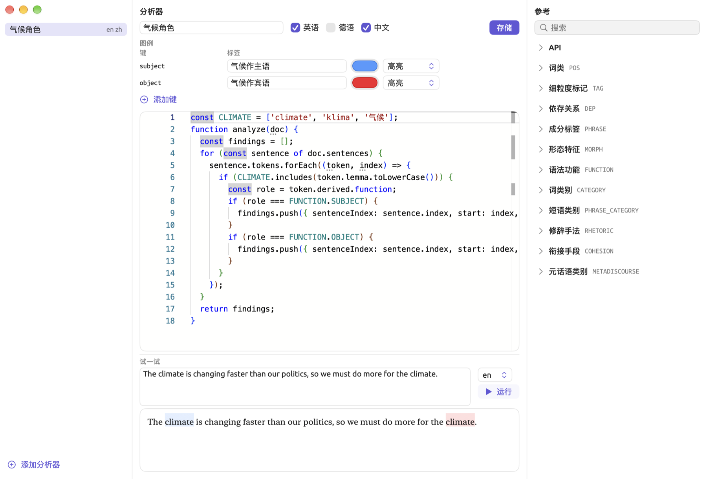
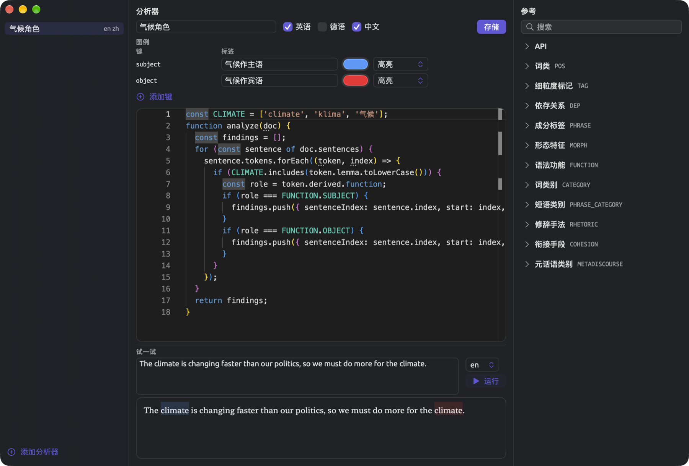
窗口打开时，中间一栏显示一个尚未存储的新分析器，它的示例脚本会找出所有名词。要修改已有的分析器，请在左侧列表中点按它。起初，试一试窗格只在这一栏底部占据很小的高度；测试时，向上拖动分隔线即可把它拉高。LemmaLoom 会记住这个高度，下次启动时沿用。
编写脚本时，编辑器会为各行编号，用不同颜色显示脚本的各个部分，并提示名称。输入 POS. 之后，自动补全弹出菜单会列出所有词类；同样，输入 LL. 之后，弹出菜单会列出辅助函数。编辑器还会在你输入时给某些错误加下划线，例如引用了未定义的常量。要在脚本中插入断点，请点按相应行号左侧的空白处（见本章后文断点与单步执行）。
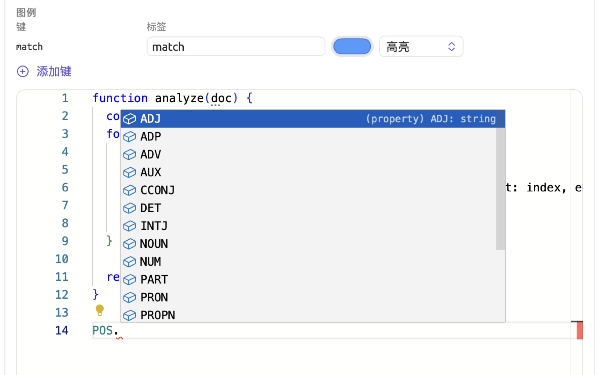
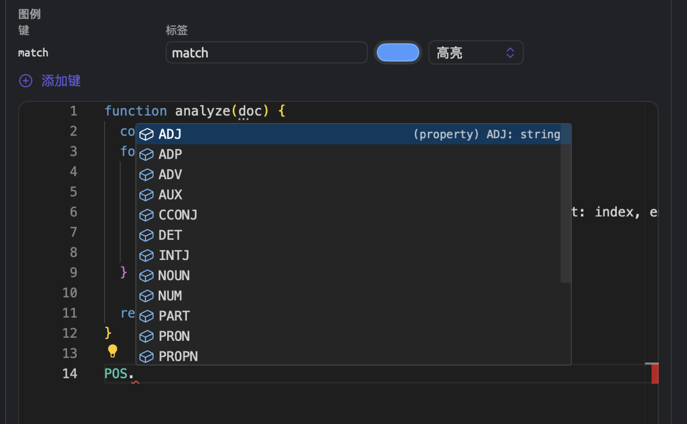
编写第一个分析器
分析器“气候角色”只有两个键，subject 和 object。每个“气候”取哪个键，取决于这个词在句子结构中充当主语还是宾语。完整的脚本如下：
const CLIMATE = ['climate', 'klima', '气候'];
function analyze(doc) {
const findings = [];
for (const sentence of doc.sentences) {
sentence.tokens.forEach((token, index) => {
if (CLIMATE.includes(token.lemma.toLowerCase())) {
const role = token.derived.function;
if (role === FUNCTION.SUBJECT) {
findings.push({ sentenceIndex: sentence.index, start: index, end: index + 1, key: 'subject' });
}
if (role === FUNCTION.OBJECT) {
findings.push({ sentenceIndex: sentence.index, start: index, end: index + 1, key: 'object' });
}
}
});
}
return findings;
}
“气候辩论”中的文档大多是中文，“时间不多了 (英语)”则是英文，所以“气候角色”在这两种语言上运行。它的图例把两个键分别称为“气候作主语”和“气候作宾语”。
要新建分析器：
- 选取窗口 ▸ 分析器。如果中间一栏显示的是你已存储的分析器，请点按列表下方的添加分析器。
- 在名称中输入名称。
- 勾选分析器要处理的文档语言。英语一开始就已勾选。
- 点按编辑器，按 ⌘A 选中示例脚本，然后输入或粘贴你的脚本来替换它。
- 在图例中为每个键设置标签，LemmaLoom 会在这里列出它在脚本中找到的键（见本章后文键与图例）。
- 在试一试下测试脚本（见本章后文用“试一试”测试）。
- 点按存储。
测试“气候角色”时，最好用一个同时包含两种用法的句子，例如 The climate is changing faster than our politics, so we must do more for the climate（气候变化得比我们的政治还快，所以我们必须为气候多做一些）。在旁边的语言菜单中选取 en 后点按运行，第一个 climate 会以蓝色标为 subject，第二个以红色标为 object。
存储之后，新分析器会加入列表，LemmaLoom 随即在后台对你所选语言的文档运行它。这些语言的每个文档的透镜菜单中会立即出现这个分析器；分析器在某个文档上运行完毕后，它的标注就会出现在那里。
解读脚本
如果你熟悉 JavaScript，可以直接跳到下文的分析器接收的文档。请注意，下文提到的行号是代码粘贴进去后编辑器显示的行号。
第 1 行（const CLIMATE = …）定义哪些词元算作“气候”。const 为一个值命名，方括号定义一个数组。英语 climates 的词元是 climate，德语 Klimas（如 des Klimas）的词元是 Klima。这个数组列出这个词的英语、德语和中文形式。请注意，德语词写成小写的 klima，因为第 6 行在匹配词元时会把每个词元转成小写。
第 2 行（function analyze(doc) {）定义 LemmaLoom 要调用的函数，它有一个名为 doc 的参数。这个参数就是 LemmaLoom 传入的文档对象。第 3 行（const findings = []）声明一个数组变量 findings，用来存放发现。
第 4 行（for (const sentence of doc.sentences) {）遍历文档的每个句子，每次都执行这个代码块中的操作。同样，第 5 行（sentence.tokens.forEach(…)）遍历当前句子中的词符。(token, index) => { … } 是一个匿名函数；forEach 每次调用它，传入当前词符和它在句中的位置（从 0 开始）作为参数。
如果第 6 行（if (CLIMATE.includes(…)) {）的条件为真，也就是 includes 在列表 CLIMATE 中找到了词符的词元，这个 if 的花括号中的语句就会执行。
第 7 行（const role = token.derived.function;）读取当前词符的语法功能值，也就是语法功能透镜显示的值。第 8 行（role === FUNCTION.SUBJECT）和第 11 行（role === FUNCTION.OBJECT）用 === 检验是否相等。两个操作数相等时，相等运算符返回真。这里，脚本检查词符的语法功能是 FUNCTION.SUBJECT 还是 FUNCTION.OBJECT（见本章后文常量）。
条件为真时，脚本在第 9 行和第 12 行（findings.push(…)）把表示发现的对象添加到数组 findings 中；注意对象用花括号括起来。每个对象有四个字段，分别表示来源句子、这段文字的起始位置（start，即当前词符的 index）、紧接在这段文字最后一个词符之后的位置（end，这里是 index + 1）以及键。因此，每条发现只对应一个词，它的起始位置和结束位置是两个相邻的数。
最后，第 17 行（return findings;）把结果交还给 LemmaLoom。
宾语是语法功能中一个宽泛的类别，也包括介词的宾语。因此，这个脚本既会统计 protect the climate 这样的例子，也会统计 do more for the climate。被动句的主语，如 the climate is affected by our emissions 中的 climate，属于 FUNCTION.SUBJECT 这一语法功能类别，所以算作主语。如果要把被动句主语和宾语算在一起，可以把第 7 行改为 const role = token.dep === DEP.NSUBJPASS ? FUNCTION.OBJECT : token.derived.function;。借助 ? 和 :，这一行根据词符是不是被动句主语，在 FUNCTION.OBJECT 和词符本身的功能之间选择。请记住，这种办法只在英语中完全适用；德语的语法分析给被动句主语的标注与主动句主语相同，中文的语法分析只给部分被字句的主语加上这个标签。
这个脚本可以从语法上追踪任何一个词，例如“政府”或“产业”。把第 1 行中的词元换成你要追踪的词的小写形式即可。
分析器接收的文档
函数 analyze 接收一个参数，下文称为 doc。这个参数有三个字段：
| 字段 | 内容 |
|---|---|
doc.language | 分析所用的语言，即 "en"、"de" 或 "zh" |
doc.sentences | 各个句子，按顺序排列 |
doc.builtins | 内置分析器衔接、元话语和修辞的结果 |
分析器只能根据文档的分析返回结果。如果要把分析器的发现与你的编码实例、备忘录、链接、书签、属性、文档信息或其他自定义分析器的结果结合起来，请考虑为此构建一个查询（见本章后文使用发现）。
对于非常大的文档，LemmaLoom 会分段建立索引，每段文本最长半兆字节（约 80,000 个英语单词）。LemmaLoom 对每一段调用一次 analyze 函数，句子编号也重新从 0 开始。一般长度的文档作为一个整体建立索引。
句子
doc.sentences 中的每一项包含以下字段：
| 字段 | 内容 |
|---|---|
index | 句子的编号，从 0 开始。它也是句子在 doc.sentences 中的位置。 |
text | 句子的文本 |
tokens | 句子中的词符，按顺序排列 |
root | 句子根词符的位置，根通常是主要动词；句子没有句法分析时为 -1 |
constituents | 句子中的短语（见短语与名词块） |
nounChunks | 句子中的名词块 |
词符
词符在每个句子中从 0 开始编号，脚本中的位置指的都是词符的编号。词符可以是词，也可以是标点符号。每个词符包含以下字段：
| 字段 | 内容 | 示例 |
|---|---|---|
text | 词符在文本中的原样 | targets |
whitespace | 词符后面的空白 | " " |
lemma | 词典形式；中文与 text 相同 | target |
pos | 通用词类，各语言使用相同的代码 | NOUN |
tag | 该语言自身标记集中的细粒度标记 | NNS |
dep | 与中心词之间的依存关系 | nsubjpass |
head | 中心词的位置；根指向自身 | 4 |
index | 词符自身在句中的位置 | 2 |
morph | 形态特征；中文为空 | { Number: "Plur" } |
isStop | 对 the、of 这类非常常见的词为 true | false |
derived | LemmaLoom 根据上述字段得出的三个类别（见下一节） |
表中的示例分析基于句子 The new targets were announced last year.（新的目标已于去年公布）。这个句子的分析大致如下：
| index | text | lemma | pos | tag | dep | head | derived.function |
|---|---|---|---|---|---|---|---|
| 0 | The | the | DET | DT | det | 2 | adjectival |
| 1 | new | new | ADJ | JJ | amod | 2 | adjectival |
| 2 | targets | target | NOUN | NNS | nsubjpass | 4 | subject |
| 3 | were | be | AUX | VBD | auxpass | 4 | connector |
| 4 | announced | announce | VERB | VBN | ROOT | 4 | mainClause |
| 5 | last | last | ADJ | JJ | amod | 6 | adjectival |
| 6 | year | year | NOUN | NN | npadvmod | 4 | adverbial |
| 7 | . | . | PUNCT | . | punct | 4 | unknown |
可以把 head 一列看作从每个词指向它所依存的词的箭头。targets 作为被动句主语，依存于位置 4 的 announced；the 和 new 则依存于 targets。announced 是根词，所以它的中心词就是它自己，sentence.root 为 4。
标记和关系标签因语言而异。英语的标记遵循 Penn Treebank，关系标签是 nsubj、dobj 这样的英语依存关系。德语的标记遵循 STTS，关系标签遵循 TIGER，例如 sb 表示主语，oa 表示宾格宾语。中文的标记遵循 Chinese Treebank，关系标签是英语的关系标签加上 aux:asp、nmod:assmod 等中文标签。pos 字段和 derived 各字段的取值在三种语言中完全相同，所以只检验这些字段的脚本适用于所有语言。参考面板按名称列出了标记和标签（见本章后文参考面板）。
派生类别
token.derived 包含 LemmaLoom 为每个词符计算出的三个类别。每个类别对应一个透镜，在每种语言中含义都相同。
| 字段 | 透镜 | 取值 |
|---|---|---|
derived.function | 语法功能 | subject、object、predicative、complement、adjectival、adverbial、appositive、agent、conjunct、connector、mainClause、unknown |
derived.posCategory | 词类 | noun、verb、adjective、adverb、pronoun、determiner、preposition、conjunction、number、interjection、other |
derived.phraseCategory | 短语 | nounPhrase、verbPhrase、prepPhrase、adjPhrase、advPhrase、conjPhrase、interjection、other，或空字符串 |
LemmaLoom 根据词符的依存关系推断它的功能。不过，对于几种关系，推断时还要考虑词符的中心词。如果中心词是名词、代词或数词，像 advmod 这样的修饰关系算作 adjectival，否则算作 adverbial。带子类型的关系（用冒号标出）按冒号前的部分归类，只有 obl:agent 例外，它算作 agent。根的功能是 mainClause，unknown 指其余所有关系，例如标点。
短语类别是包含该词符的最小短语（小句除外）的类别。只属于小句一级短语的词符（例如句号），短语类别为空字符串。
短语与名词块
sentence.constituents 给出句子中各个短语组成的数组，依据的是短语透镜和句子图示中直观显示的短语结构树。每个短语包含其词符的起始位置和结束位置（start 和 end），以及短语标签的数组 labels，例如名词短语为 ['NP']。如果几个短语覆盖的词符完全相同，它们会合为一个对象，标签按从外到内的嵌套顺序排列。
sentence.nounChunks 给出句子中的名词块。名词块是一个名词连同它前面从属于它的词，例如 the new targets。名词块包含起始位置和结束位置。
对于 The new targets were announced last year.，这两个数组可能是这样的：
constituents: [
{ start: 0, end: 8, labels: ['S'] },
{ start: 0, end: 3, labels: ['NP'] },
{ start: 3, end: 7, labels: ['VP'] },
{ start: 4, end: 7, labels: ['VP'] },
{ start: 5, end: 7, labels: ['NP'] },
]
nounChunks: [
{ start: 0, end: 3 },
]
S 表示句子，VP 表示动词短语。last year 是名词短语，但不是名词块。在英语中，名词块只出现在充当主语、宾语或句中类似成分的名词或代词周围，而这里的 year 实际上是状语修饰语。两个列表都可能为空，例如只有一个词的回答。编写程序代码时，要考虑到这些情况。
内置分析器的结果
你的自定义分析器最后在文档上运行。三个内置分析器先运行，并把结果放在 doc.builtins 中。即使你先前删除了某个内置分析器的结果，你的自定义分析器仍然可以使用这些结果。
| 字段 | 每一项包含 |
|---|---|
doc.builtins.cohesion | 每句一项，包含 sentenceIndex、tie（句子如何与前文衔接）、theme 和 rheme（分别是句子开头和句子重心所在的词符范围，形式为 [start, end]；句子没有相应部分时，该字段不存在）以及 tieWord（构成衔接的词） |
doc.builtins.metadiscourse | 分析器找到的每个词一项，包含 sentenceIndex、local（词符的位置）以及 category（例如 hedge） |
doc.builtins.rhetoric | 每个修辞手法一项，包含 device（例如 passiveVoice）、sentenceIndex、range（词符范围，形式为 [start, end]）以及 note |
tie 有七个取值（opening、pronoun、possessive、demonstrative、repetition、zero 和 broken）。category 有五个可能的取值（hedge、booster、attitude、connective 和 engagement）；此外，德语的 category 还可能是 modalParticle，中文的还可能是 finalParticle。最后，device 有十三个可能的取值，从 passiveVoice 到 correlative。参考面板列出了每个字段的所有可能取值，以及透镜中定义的名称。关于各个分析器分析什么，详见第 6 章“透镜”。
辅助函数
LL 提供了几个函数，用来处理编写脚本时的常见操作。
| 函数 | 返回 |
|---|---|
LL.isWord(token) | 词符不是标点或 $ 之类的符号时为 true |
LL.isNominal(pos) | 对 NOUN、PROPN 和 PRON 为 true |
LL.isVerbal(pos) | 对 VERB 和 AUX 为 true |
LL.children(sentence, i) | 以词符 i 为中心词的各个词符的位置 |
LL.subtree(sentence, i) | { start, end }，即词符 i 周围由它和直接或间接依存于它的词符组成的连续范围 |
LL.root(sentence) | 句子根的位置，与 sentence.root 相同 |
LL.text(sentence, start, end) | 从 start 到 end 之前各词符的文本，连同其间的空白 |
console.log(...) | 在试一试下方写出一行；列表和对象会完整写出 |
在示例句中，LL.children(sentence, 4) 返回数组 [2, 3, 6, 7]，即依存于 announced 的词符。调用 LL.subtree(sentence, 2) 会得到一个有两个字段的对象 { start: 0, end: 3 }，它覆盖文本 The new targets；调用 LL.text(sentence, 0, 3) 则得到文本 "The new targets"。
console.log 调用只用于调试；分析器在你的文档上运行时，它的输出会被丢弃。
常量
绝大多数字段存放的是 NOUN、nsubjpass 这样的简短代码。代码可以写成带引号的字符串，也可以写成具名常量；表达式 token.pos === POS.NOUN 与 token.pos === 'NOUN' 含义相同。请尽可能使用具名常量。编辑器会弹出具名常量的建议，并给拼错的常量加下划线。带引号的字符串则无论拼写是否正确，都会原样接受。运行时，像 POS.NOUM 这样拼错的常量求值为 undefined，脚本照常运行，所以下划线是唯一的提醒。
| 常量 | 对应的取值 | 示例 |
|---|---|---|
POS | token.pos | POS.NOUN 即 'NOUN' |
TAG | token.tag，三种语言都有 | TAG.NNS 即 'NNS' |
DEP | token.dep，三种语言都有 | DEP.NSUBJPASS 即 'nsubjpass' |
PHRASE | 成分的 labels | PHRASE.NP 即 'NP' |
MORPH | token.morph 中特征的名称 | MORPH.TENSE 即 'Tense' |
FUNCTION | token.derived.function | FUNCTION.SUBJECT 即 'subject' |
CATEGORY | token.derived.posCategory | CATEGORY.NOUN 即 'noun' |
PHRASE_CATEGORY | token.derived.phraseCategory | PHRASE_CATEGORY.NOUN_PHRASE 即 'nounPhrase' |
COHESION | doc.builtins.cohesion 中的 tie | COHESION.REPETITION 即 'repetition' |
METADISCOURSE | doc.builtins.metadiscourse 中的 category | METADISCOURSE.HEDGE 即 'hedge' |
RHETORIC | doc.builtins.rhetoric 中的 device | RHETORIC.PASSIVE_VOICE 即 'passiveVoice' |
KEY | 本分析器图例中的键 | KEY.SUBJECT 即 'subject' |
LemmaLoom 中的常量名称就是大写的代码。如果代码中小写字母后面紧跟大写字母，就在两者之间加一个下划线，例如 nounPhrase 写作 NOUN_PHRASE，mainClause 写作 MAIN_CLAUSE。不能出现在名称中的非字母符号（例如冒号）都换成下划线。
MORPH 常量是特征代码的名称。特征的取值请写成字符串，例如 token.morph[MORPH.TENSE] === 'Past'，或者直接写成 token.morph.Tense === 'Past'。
常量名称适用于大多数代码，但有四种情况不同：
DEP.ROOT的值是'root'，但分析中根的标签是ROOT。要判断一个词符是不是根，请比较位置，如index === sentence.root，或者使用'ROOT'。MORPH常量下列出十个常见特征，即 Tense、Number、Person、Mood、VerbForm、Case、Degree、Aspect、Gender 和 PronType。MORPH常量中没有的特征，请直接使用它的字符串形式，如token.morph.Definite === 'Def'。- 只出现在中文中的短语标签，例如
IP、DNP和LCP，需要在名称外加引号。 - 完全由标点构成的标记，例如英语的句号（
.）和逗号（,）或德语的$,，也需要加引号。
不要使用已经属于常量、LL 或 console 的名称。脚本如果自己定义了 const KEY，运行时就会因出错而停止。
参考面板
窗口右侧的参考面板列出文档对象的各个部分、辅助函数和常量。API 下列出 doc.language、doc.sentences[i].tokens[j]、doc.builtins 中的全部三个列表，以及各个辅助函数。每个组成部分的声明后面都注明它的值类型，例如 String、Bool。句子、词符和发现对象的所有字段，可以在本章的表格中查看。API 下面的各部分列出常量，每个常量都附有一个通俗的名称：
- 词类（
POS）、细粒度标记（TAG）、依存关系（DEP）、成分标签（PHRASE）和形态特征（MORPH）； - 语法功能（
FUNCTION）、词类别（CATEGORY）和短语类别（PHRASE_CATEGORY）； - 修辞手法（
RHETORIC）、衔接手段（COHESION）和元话语类别（METADISCOURSE）。
以上各部分默认都是收起的。点按某一部分的标题，即可展开或收起这一部分。在搜索中输入某一项的一部分文字，即可查找它。查找常量时，会比对它的名称、代码或通俗名称；查找 API 中的项时，会搜索 API 声明的原文。面板会把所有部分中匹配的项合并列出，或者显示无匹配项。点按任何一项，即可把它插入编辑器中光标所在的位置。
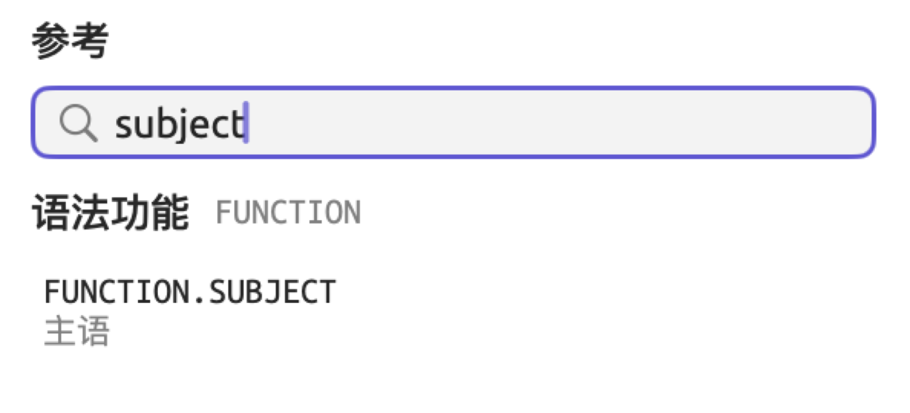
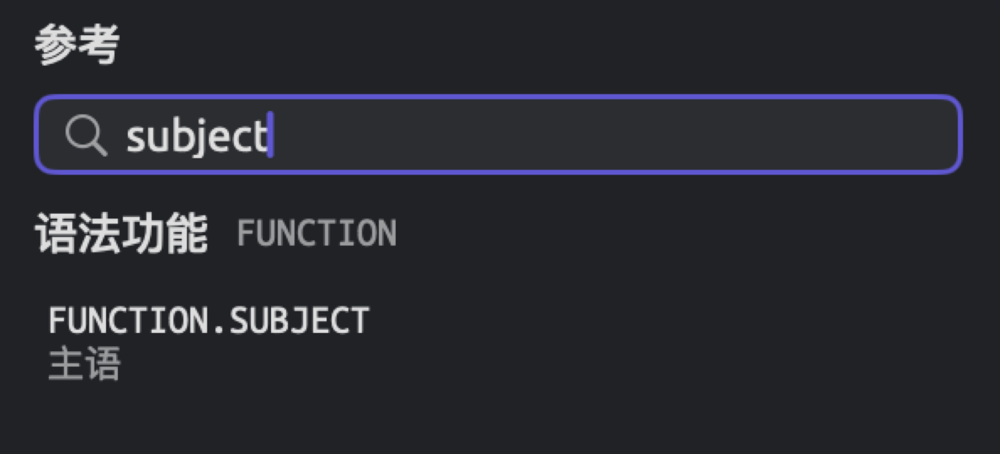
发现与图例
发现
analyze 必须返回一个列表，其中每个元素都是一条发现，包含以下字段：
| 字段 | 内容 |
|---|---|
sentenceIndex | 句子的 index |
start | 这段文字第一个词符的位置 |
end | 紧接在最后一个词符之后的位置 |
key | 图例中的某个键 |
note | 一段你自己写的简短文本；可选 |
以 The new targets were announced 为例，第一个词符在位置 0，最后一个在位置 4，所以这条发现取 start: 0 和 end: 5。因此，词符数总是等于 end - start，这里是 5。
一条发现只能位于一个句子之内。发现可以相互重叠，因此一个词符可以带有多个键；这时阅读器会在它上面呈现所有这些键的样式。
注释字段供查询使用。你可以在查询中用字段注释检验它们（见本章后文使用发现）。
键与图例
发现用到的每个键，在图例中都必须有对应的一行。编辑器上方的图例窗格为每个键显示一行，包含以下几部分：
- 键显示脚本中写的键。
- 标签是透镜图例中显示的名称，查询也使用它。标签最初就是键名本身。
- 颜色池设定这个键的发现所用的颜色。新键会从八种颜色中依次取色。
- 样式菜单设定阅读器的呈现方式，选项有高亮、下划线、文本颜色和粗体。新添加的键最初选择的是高亮。
你编写脚本时，脚本中每个用引号写出的键（key: '...'）都会在图例中生成一行，顺序与它们在脚本中出现的顺序相同。从脚本中删除一个键，图例中相应的行也会删除。如果修改了键名，原来那一行就会删除，换成一个新行，以修改后的键为标签，并使用默认颜色。因此，最好在确定键名之后再设置颜色和标签。
你可以随时修改任何一行，包括它的标签、颜色和样式。存储之后，对图例行所做的修改会显示在启用了该透镜的每个文档中。
由脚本计算出的键
键也可以根据分析本身生成。用下面这一行替换分析器“气候角色”中的两条 if 语句及其中的 push 语句，语法功能就会成为键：
findings.push({ sentenceIndex: sentence.index, start: index, end: index + 1, key: token.derived.function });
作主语的“气候”得到键 subject，作宾语的“气候”得到 object，climate policy（气候政策）的第一部分得到 adjectival，依此类推，涵盖本章前文派生类别中列出的全部十二个取值。
这些键通过试运行进入图例。点按存储时，LemmaLoom 会在一个由三个词组成的示例句（英语为 Cats sleep soundly）上运行脚本，并自动添加运行中产生的键。这些行会保留各自的标签和颜色；脚本不再产生的键会在下次存储时移除。
试运行没有产生的键（如本例中的键）需要手动添加：
- 点按图例下方的添加键。
- 在新行的键栏中输入键，写法要与脚本产生的完全一致（例如
adjectival）。 - 填写标签，并设置颜色和样式。
你添加的行末尾有一个减号按钮，用来移除这一行；无论脚本中写了什么，这一行都会保留在图例中。存储时，LemmaLoom 会略去键为空的行；两行的键相同时，只保留第一行。
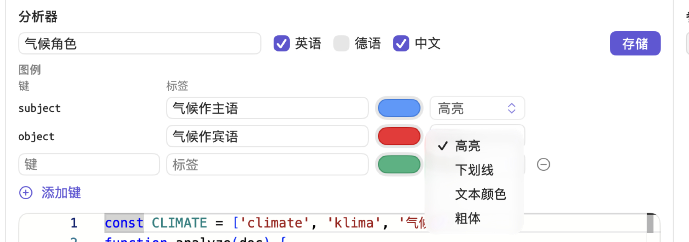
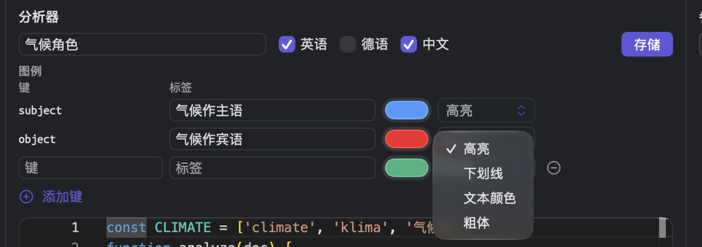
图例中有某个键，KEY 中就有对应的常量。图例中列有键 subject 时，你可以写 key: KEY.SUBJECT。如果你只以 KEY 常量的形式写出某个键，就需要用添加键添加它。以数字开头的键（如 1st），或包含 a 到 z 以外字母的键（如 über 或 主语），要用引号括起来。
支持的语言
复选框英语、德语和中文决定分析器在哪些文档上运行。LemmaLoom 为这三种语言的文档建立索引。只有所选语言的文档，才会在透镜菜单中提供这个分析器，并在文档信息中显示它。至少要选择一种语言。
请确保你的脚本适用于所选的语言。“气候角色”适用于全部三种语言，不过“气候辩论”只需要中文和英语。“气候角色”的列表包含英语、德语和中文的词元，检验的是 token.derived.function，这个字段在所有语言中取值都相同。检验 token.tag 或 token.dep 的脚本只适用于其标签所属的语言。一个脚本可以借助 doc.language 处理多种语言：
let subjectLabel = 'nsubj';
if (doc.language === 'de') {
subjectLabel = 'sb';
}
即使考虑到派生字段，每种语言的分析在细节上也会有所不同，所以请测试你选择的每种语言。在英语中，do more for the climate 会产生一条发现，因为分析把 climate 视为介词 for 的宾语。而在德语中，介词短语 für das Klima 中的名词通常标为 nk（名词短语的一部分），因而算作 adjectival，这个句子就不会产生发现。
要测试另一种语言，请在试一试下的语言菜单中选取它，再输入用这种语言写的句子。菜单中只能选择你勾选的语言，并以代码列出：en 表示英语，de 表示德语，zh 表示中文。
存储时，LemmaLoom 会从已取消勾选的语言的文档中删除这个分析器的发现，并在新勾选的语言的文档上运行它。
用“试一试”测试
试一试在你输入的文本上运行编辑器中当前的脚本，无论脚本是否已存储。编写时请经常使用试一试，并加入结构与最初例句不同的句子，因为分析器必须应对你的文档中的每一种句子结构。
- 在试一试下的文本框中输入一个或多个句子。
- 在文本框旁边的菜单中选取文本的语言。
- 点按运行。
LemmaLoom 用与文档相同的方法对你的文本进行语法分析，然后运行内置分析器，再运行你的脚本。你的文本会出现在文本框下方，发现按图例中指定的颜色和样式标注出来。对某种语言第一次运行之前，LemmaLoom 可能需要几秒钟为这种语言准备语法分析。文本框为空时，运行已停用（未输入文本）；运行期间，按钮的位置会显示一个旋转图标。
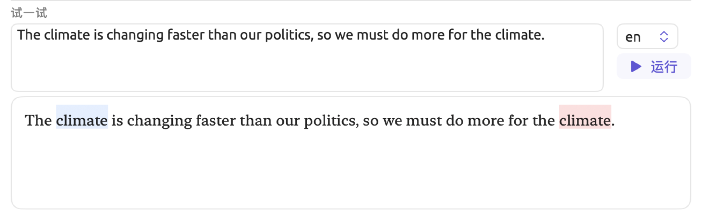
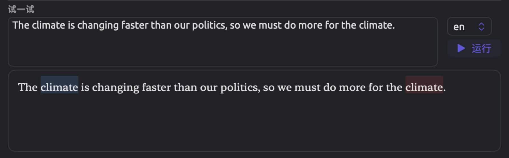
标注文本的下方有一个小控制台，显示脚本用 console.log 写出的所有内容，每次调用占一行，每行前面都有 ›。脚本什么也没找到时，控制台显示0 个结果。如果想知道分析如何解读某个句子，可以把相应的值写出来。把下面这一行放在遍历句子的循环中，它会写出每个词符及其依存关系：
console.log(sentence.tokens.map((token) => token.text + '/' + token.dep));
对于 The new targets were announced last year.，它写出 ["The/det","new/amod","targets/nsubjpass","were/auxpass","announced/ROOT","last/amod","year/npadvmod","./punct"]。
只要窗口开着，测试文本就会保留在文本框中，即使切换分析器也是如此，所以你可以在同一段文本上运行多个分析器。
出现错误时
如果运行失败，LemmaLoom 会停止执行你的脚本，在编辑器下方以红色显示错误信息；如果错误出在某一行，还会在编辑器中给这一行加下划线。发现本身有任何错误时，编辑器会给第 1 行加下划线。
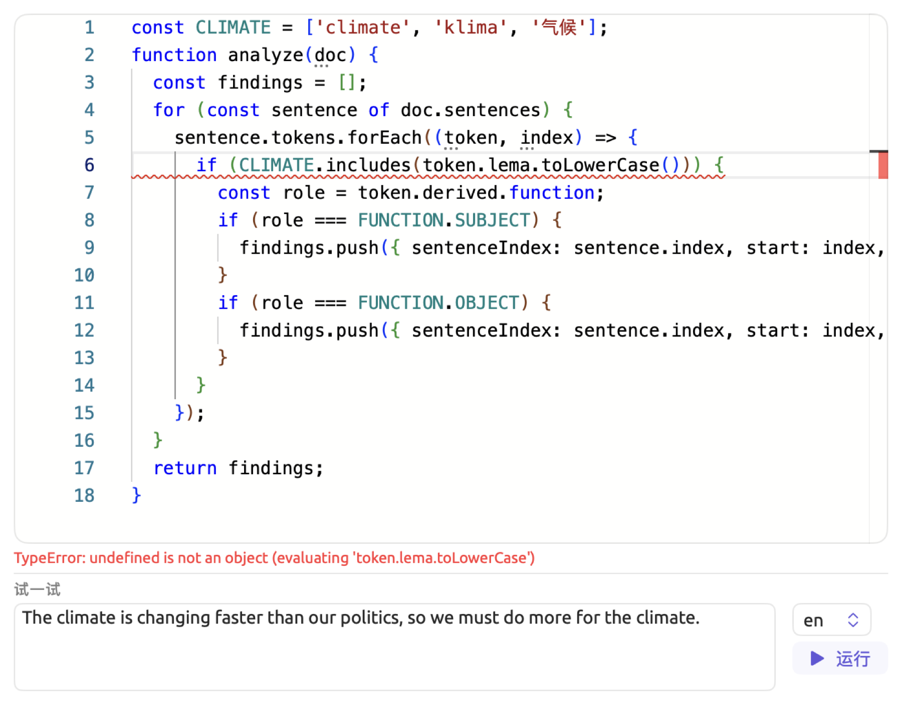
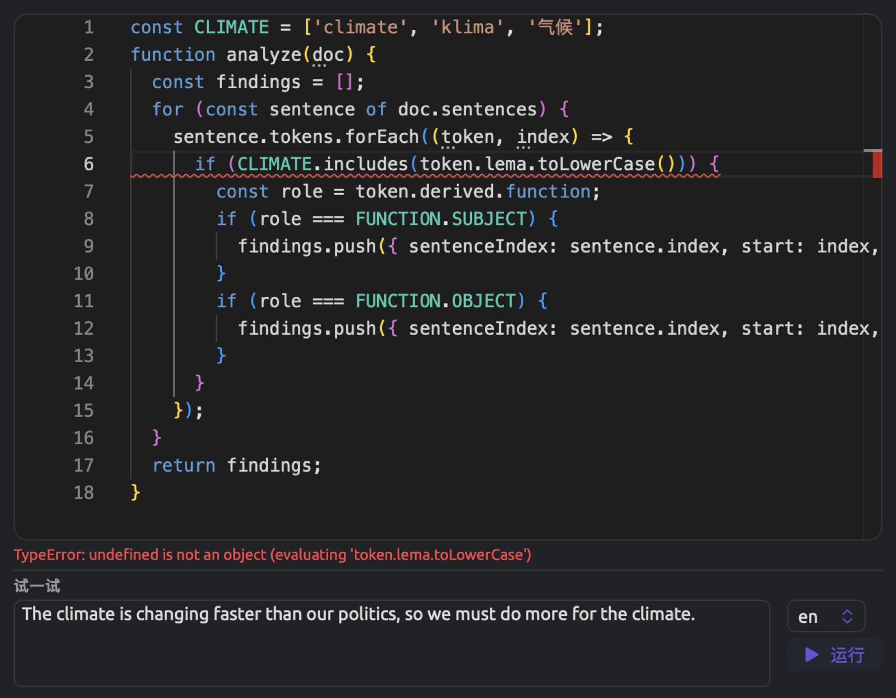
| 信息 | 含义 |
|---|---|
| The script must define a function named analyze(doc). | 没有名为 analyze 的函数，可能是因为函数名拼错了。 |
| analyze(doc) must return an array of findings. | 函数没有返回任何内容，或者返回的不是列表。请检查 return 这一行。 |
| Finding 3 must have sentenceIndex, start, end, and key. | 某条发现缺少四个字段之一，某个字段名拼错了，或者某个值的类型不对（位置不是数字，或者键不是文本）。像 KEY.SUBJCT 这样拼错的常量没有值，所以也会导致这条信息。发现从 0 开始计数，所以这里指的是第四条。 |
| Finding 3: sentenceIndex 12 is out of range. | 没有这个编号的句子。 |
| Finding 3: token range 4..4 is out of range for sentence 0. | end 不大于 start，start 小于 0，或者 end 超出了句子末尾。 |
| Finding 3: key “objekt” is not in the legend. | 这个键在图例中没有对应的行。请改正脚本，或者用添加键添加这个键。 |
| 以 TypeError、ReferenceError 或 SyntaxError 开头的信息 | JavaScript 本身的错误。编辑器会给相应的行加下划线。 |
TypeError 常常表示某个字段名拼错了。假设“气候角色”的第 6 行写的是 token.lema.toLowerCase()，而不是 token.lemma.toLowerCase()。这个错误会让运行在第 6 行因 TypeError 而停止，因为 token.lema 不存在，也就无法转成小写。
陷入无限循环的脚本会一直执行下去。在试一试下，旋转的圆圈会一直占据运行的位置。存储按钮也会执行脚本，所以也可能造成同样的问题。由于退出会丢失未存储的修改，你需要先用 ⌘A 选中整个脚本，再用 ⌘C 拷贝它。然后退出 LemmaLoom（⌘Q），重新打开，再把脚本粘贴回去。陷入无限循环的脚本通常含有一个条件永远不会变为假的 while 循环。如果脚本中有遍历列表的 for … of 或 forEach 以外的循环，请在存储之前先用一小段文本测试它。
断点与单步执行
如果标注出的文本不符合预期，你可以在测试运行中途暂停执行，查看脚本中变量的当前状态。
- 点按编辑器中行号左侧的空白处，或点按行号本身。出现一个红点，表示这一行设有断点。再点按一次即可移除。
- 点按试一试下的运行。
脚本会在即将执行带断点的那一行时暂停。这一行会高亮显示，测试文本下方的一个框中会显示它的行号（例如 ● L7），以及脚本中各个变量的当前值。此外，把鼠标指针悬停在脚本编辑器中的某个变量上，也会显示它的值。
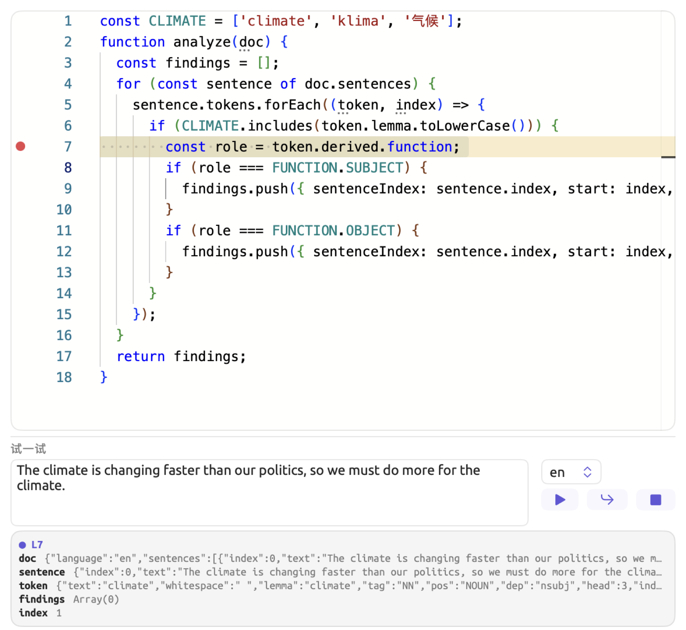
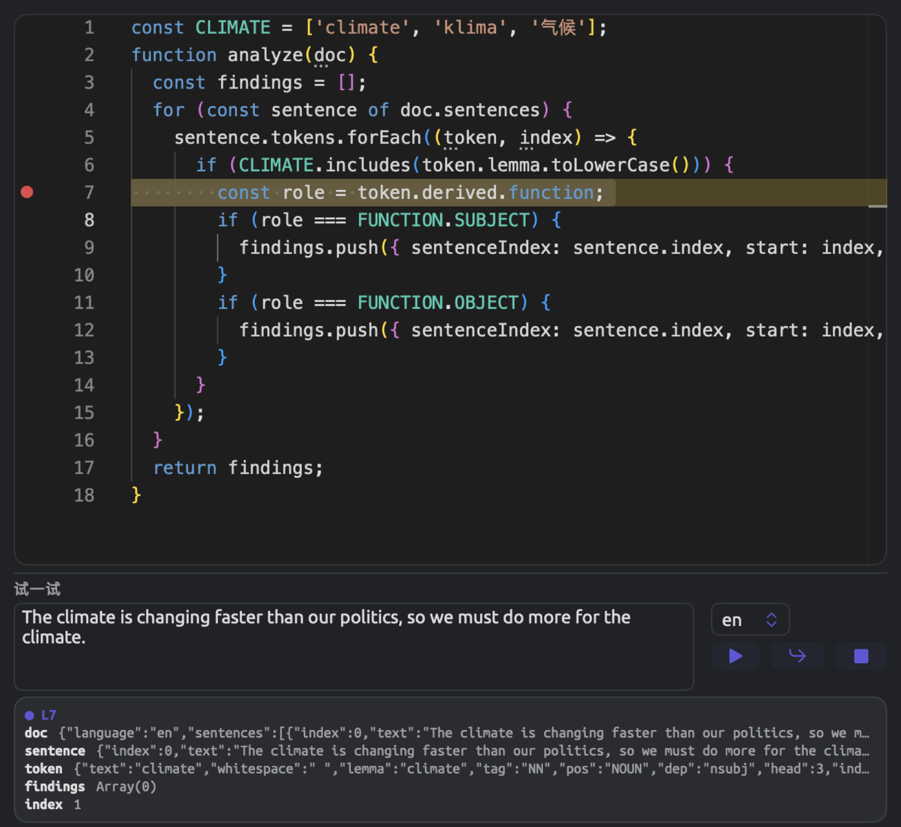
这时，三个按钮取代了运行：
- 播放按钮会越过当前断点，继续运行到下一个断点或运行结束。
- 弯箭头会前进到下一个开始一条语句的行，包括进入循环语句和交给
forEach的函数。因此，单步执行“气候角色”会依次经过每个词符。 - 方块会提前结束运行。
LemmaLoom 只显示 doc、sentence、token、findings、finding、marker、span、clause、i 和 index 这些变量，而且只在它们当前存在于脚本中时才显示。本章的示例尽可能使用这些名称。其他变量，例如“气候角色”中的 role，可以用 console.log 写出来。较长的值会被截断。列表显示为它的长度（Array(3)），文本在前 80 个字符之后截断，对象在 120 个字符之后截断。
以“气候角色”和本章前文介绍的测试句为例，在第 7 行（const role = …）设置断点后，执行会在第一个 climate 处暂停，此时 index 为 1，findings 为 Array(0)。点按播放按钮后，执行在第二个 climate 处暂停，此时 index 为 16，findings 为 Array(1)，因为第一个 climate 的发现已在两次暂停之间添加进去。
断点只会让脚本停在开始一条语句的行上。因此，设在只有右花括号和右圆括号的行上（例如“气候角色”中的 } 或 });）、以 else 开头的行上或上一条语句的接续行上的断点会被跳过。对于少数几种代码排版，LemmaLoom 只能从一个断点跟到下一个断点；在另外少数几种排版下，脚本会一直执行到底，不在任何断点处停下。断点只能在试一试中使用。
存储、修改和删除
存储分析器
要存储分析器，请点按中间一栏顶部的存储，或者在编辑名称或某个标签栏时按下 Return 键。名称为空（名称为空）或没有勾选任何语言（未选择语言）时，存储已停用。
存储分析器之前，LemmaLoom 会检查它的脚本。LemmaLoom 先提取图例的键，再针对每种所选语言，在一个由三个词组成的示例句上运行你的脚本（Cats sleep soundly、Katzen schlafen gern 和“猫 喜欢 睡觉”）。这些示例句的短语、名词块、形态特征和内置分析器结果都是空的，所以这项检查也能发现脚本在处理空列表时出现的问题。脚本有问题时，LemmaLoom 会在脚本编辑器下方告诉你（见本章前文出现错误时）。另有两条信息只在存储时显示。The script is empty. 表示编辑器中没有写任何脚本，No keys found in the script. 表示图例表格为空。
接着，LemmaLoom 把检查过的脚本应用到你所选语言的所有文档上。导航栏和窗口 ▸ 活动（⌥⌘0）中会显示进度环。所需时间取决于你有多少文档，以及你的 Mac 的性能。
修改分析器
在列表中选择一个分析器，修改它，然后点按存储。根据修改的性质，结果会有所不同：
- 如果修改的是名称、标签、颜色或样式，修改会立即在启用了它的透镜的所有地方生效。
- 如果修改的是分析器脚本本身、它所用的语言，或者它用于分析的键，LemmaLoom 会在它指定语言的所有文档上重新运行整个分析器，包括你刚勾选的语言。在分析器处理到某个文档之前，这个文档的文档信息中该分析器的行显示已过期。
新建、修改和删除分析器，都是分析器窗口撤销历史中的条目。分析器窗口处于活动状态时，选取编辑 ▸ 撤销编辑分析器之类的命令，就会回到分析器的上一个版本。在你再次从列表中选择这个分析器之前，中间一栏仍然显示你存储的内容；如果在此之前存储，就会再次存储较新的版本。关于各个窗口中的撤销，详见第 23 章“撤销与重做”中的步骤属于哪个窗口。
删除分析器
要删除分析器，请在列表中右键点按它，然后选取删除分析器。你也可以先选择这个分析器，再选取编辑 ▸ 删除分析器（⌘⌫）。这个快捷键在列表获得焦点时有效，选择分析器之后就是如此。LemmaLoom 会立即删除这个分析器。
分析器由所有项目共享，所以删除后它会立即从所有项目中消失。它的透镜在所有已打开的文档中停用，LemmaLoom 也会从所有文档中移除它的发现。编辑 ▸ 撤销删除分析器（⌘Z）会恢复它并重新运行。如果你只是不想让分析器在某些文档上运行，请为这些文档停用它（见本章后文按文档设置分析器）。
分析器何时执行
自定义分析器在建立索引的最后阶段，即在每个文档的语法分析和三个内置分析器之后，在你的文档上执行。适用于文档语言的每个自定义分析器，只要在这个文档上处于启用状态，就会依次执行。它的发现与文档本身一起存储，可以通过透镜、自动编码…和查询访问。
在以下情况下，你的分析器会在文档上执行：
- 初次建立索引时，即导入项目之后或通过立即建立索引；
- 之后重新建立索引时，例如更改了文档的文本或语言设置之后；
- 存储新分析器时，或者存储对分析器脚本、所选语言或键的修改时；
- 在文档的文档信息中点按运行时。
修改现有的分析器之后，LemmaLoom 通常会沿用之前对文档进行的语法分析，只重新执行各个分析器，而不是一切从头再来。尽管如此，分析器仍要处理它所适用语言的每个文档。脚本写得效率低下，就会拖慢所有文档的处理。更糟的是，脚本如果陷入无限循环，就会一直运行下去，直到你退出 LemmaLoom。遇到这种情况，请先在窗口 ▸ 分析器中改正或删除出问题的分析器，再退出并重新打开 LemmaLoom。
脚本可能在某个文档上执行出错。也许这个文档包含某种词语或句法组合，而编写脚本时的测试句里没有出现过。LemmaLoom 会丢弃该分析器在这个文档上的发现，并在文档信息中把它标为未运行或已过期。你可以在那里点按运行重试。如果问题依旧，分析器脚本再次失败，LemmaLoom 会在文档信息中把它标为失败，鼠标指针悬停时显示错误信息。要找出确切的问题，请把可疑的句子放进试一试，在那里运行脚本。
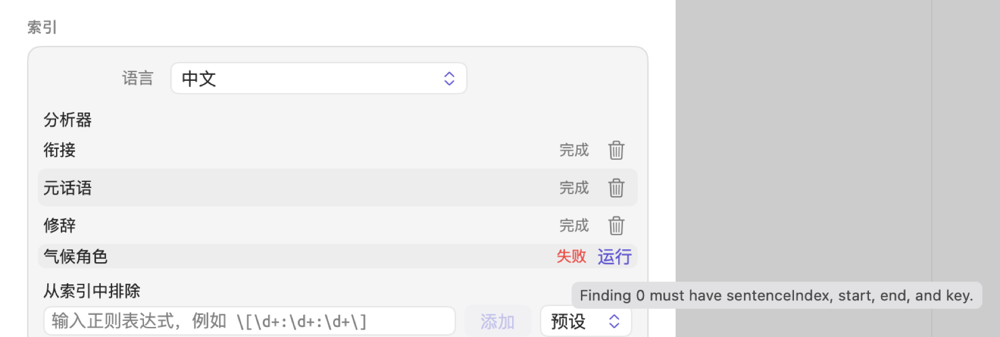
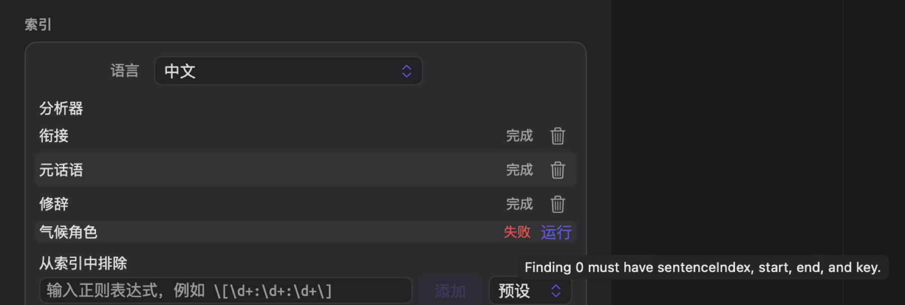
按文档设置分析器
分析器会在其所支持语言的每个文档上运行，除非你为某个文档停用了它。不适合某个文档的分析器，你可以在导入这个文档时停用，也可以之后随时停用。第 21 章“分析与索引”中的为文档选择分析器介绍了如何为文档选择分析器。
导入文档时，你可以在导入文档对话框（网页则为从网页导入对话框）中使用分析器列表。列表先显示内置分析器，再按名称顺序显示你的分析器。列表中的每一项都有一个复选框，取消勾选就能阻止这个分析器在该文档上执行。语言设为自动时，列表显示所有分析器；选择了某种语言时，只显示适用于这种语言的分析器。此外，为语法分析建立索引未勾选时，这个列表会停用。详见第 4 章“导入资料”中的分析器与建立索引。
对于已在项目中的文档，分析器列表位于文档信息中：
- 在导航栏中右键点按文档，选取信息。
- 在索引部分找到分析器列表。
适用于该文档语言的每个分析器都有自己的一行，显示它是完成、已过期、未运行、运行中还是失败。
- 要从文档中移除某个分析器的发现，让它不再在这个文档上运行，请点按它的废纸篓按钮，即移除输出。分析器在这个文档上运行过之后，这个按钮才会出现。
- 要执行未运行、已过期或已从文档中移除的分析器，请点按运行；这样也会在这个文档上重新启用已移除的分析器。
文档尚未建立索引（尚未索引）或已为文档关闭索引（索引已关闭）时，运行已停用。移除和执行都会立即生效。
移除分析器和执行已移除的分析器，都是主窗口撤销历史中的操作；编辑 ▸ 撤销移除输出会恢复并重新运行这个分析器。
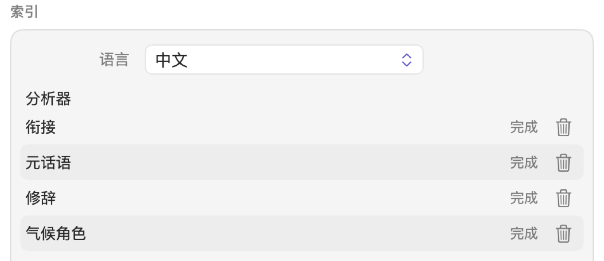
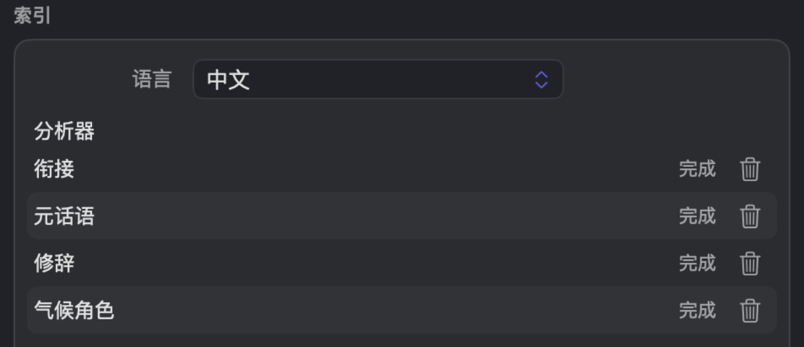
从某个文档中移除分析器后，它就不再出现在这个文档的透镜菜单中，自动编码…和涉及它的查询也会跳过这个文档。如果你之后修改了在某个文档上停用的分析器，它在那里仍然保持停用，所以新版本只在启用了它的文档上运行。
使用发现
在阅读器中
你可以在透镜菜单中逐个开关分析器，直接在阅读器中查看它们对发现的标注。要启用某个分析器的标注，请打开标题栏右侧的透镜菜单，你的分析器在这里归为一组。透镜显示标注，它的图例显示标签名称。清除分析器会立即停用所有分析器透镜。关于开关单个键，以及用仅显示透镜标注的句子只查看带标注的句子，详见第 6 章“透镜”中的分析器透镜。
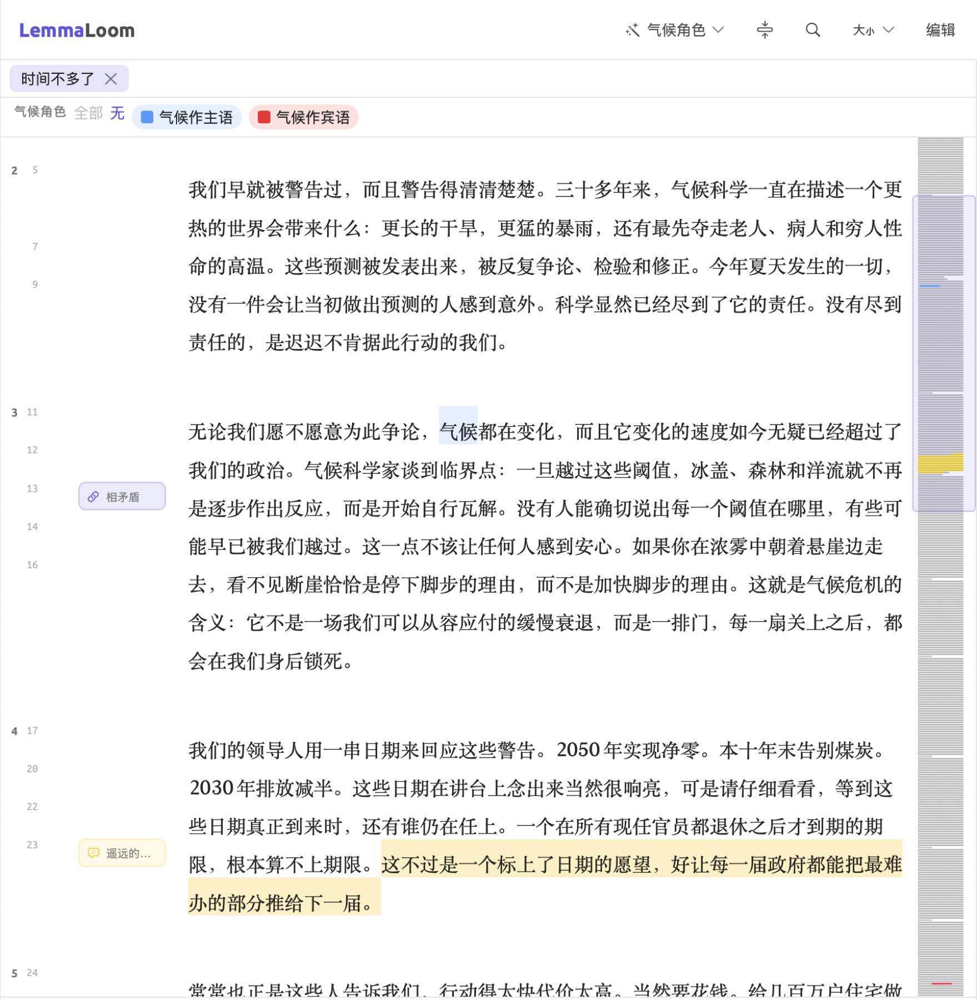
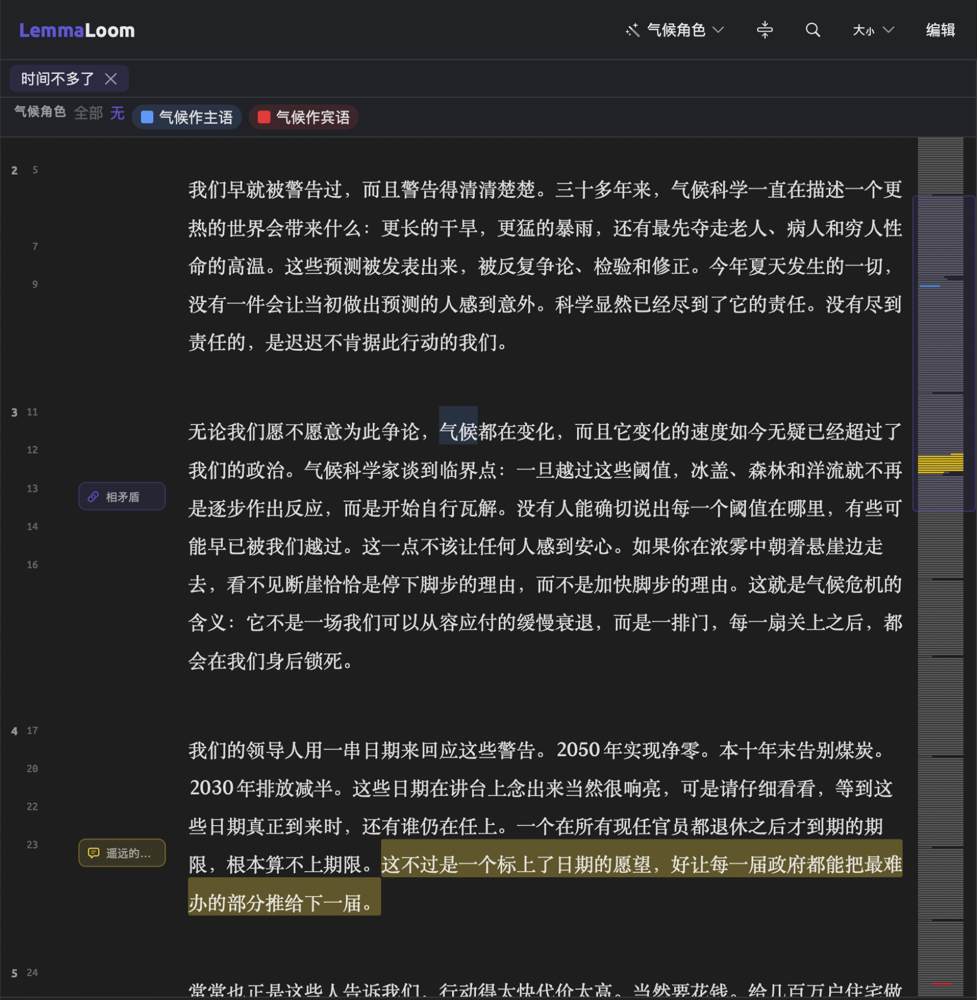
为发现编码
启用分析器的透镜后，你就可以使用文档 ▸ 自动编码…（⇧⌘A），为这个分析器的发现编码。范围可以是当前打开的文档、一个文档集，甚至整个项目。发现中的每个键都成为自动编码对话框中的一行。每一行以相应的标签命名，可以归入已有的编码（例如在“气候辩论”中，把“气候作宾语”这一行归入“责任”），也可以变成新的编码（例如用“气候角色”的两行新建两个编码）。对于文档集或项目，LemmaLoom 会对其中所有与分析器语言相同、已建立索引并启用了该分析器的文档执行同样的操作。请注意，语法分析的每个错误也会变成一条编码实例。关于这个对话框，详见第 7 章“编码”。
在查询中
查找分析 · 发现的查询会搜索各个分析器找到的内容，包括 LemmaLoom 自带的分析器和你创建的自定义分析器。有三个字段专门与发现有关。分析器检验发现是由哪个分析器找到的，发现检验记录发现时所用的键（按标签列出），注释检验发现的注释。查询中的其他检验也都适用，包括发现所带的编码，以及它所在文档的属性。查找资料库 · 分析器的查询则列出分析器本身，可以检验它们的名称、语言和图例键（见第 15 章“构建查询”中的选择要查找的内容）。
在“气候辩论”中，每个文档都有一个名为“立场”的属性，取值为“行动派”“怀疑派”或“中立”。因此，按键和“立场”统计分析器“气候角色”的发现，就能看出行动派和怀疑派呈现气候这一话题的方式是否有差异。处理你自己的材料时，请选择能把你的文档区分开来的属性来分组。
要按组统计分析器的发现：
- 打开项目的查询视图。
- 在查找中选取分析 · 发现。
- 在条件中点按添加，然后选取添加规则。
- 在新规则的字段菜单中，从发现部分选取分析器。
- 比较方式保持为是以下任一，并选择这个分析器作为规则的值。
- 在显示中选取数量。
- 点按分组依据，在新行的字段菜单中选取发现。
- 再次点按分组依据，在第二行的字段菜单中选取属性，例如属性 ▸ 立场。
- 在显示命中的菜单中选取每万词。
对于“气候辩论”中的“气候角色”，最终会得到一张表，列出“立场”每个取值下的主语和宾语。各组的文本量不同，所以你得到的实际上是一张比率表。这里的比率是指在每组文档的文本中，每 10,000 词出现多少条发现（见第 16 章“查询结果与统计”中的度量）。例如，假设行动派的文档共有 4,000 词，其中有 3 条“气候作宾语”（这里取整数只为举例），比率就是 。
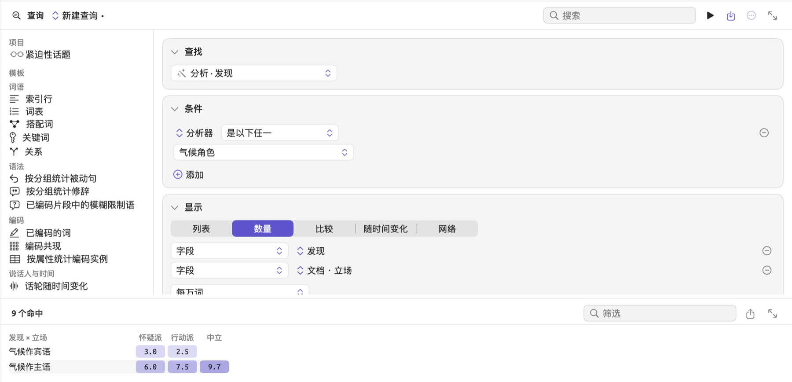
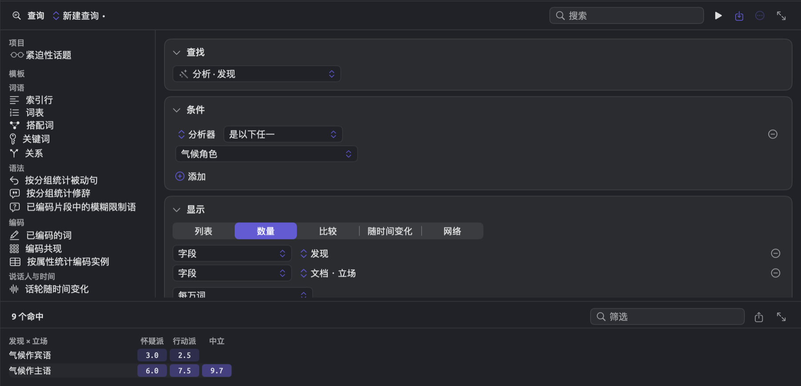
如第 16 章“查询结果与统计”中的比较各组所述，如果要检验各组之间是否存在显著差异，请在显示中选取比较，然后从分组依据中删除发现这一行，只保留“立场”，最后添加规则发现 是以下任一“气候作宾语”。三篇中立的文档“2024 热浪报告”“碳税之争”和“电台辩论”作为单独的一组参加比较。
在归档中
LemmaLoom 归档（.llz）包含归档中的文档所存发现对应的分析器，以及这些发现本身。归档还包含归档中已存储查询所用到的分析器，以及由这些查询转换而来的分析器。导入归档时，如果某个分析器与你资料库中已有的分析器同名但并无关联，它会作为另一个分析器导入，与已有的分析器并列。详见第 22 章“交换与导出”。
由查询生成的分析器
在查询的存储菜单中选取存储为分析器…，即可把查询存储为分析器。查询必须查找词、模式匹配、句子、短语或名词块，并且只检验它们的词和语法，否则无法转换为分析器。新生成的分析器会和其他分析器一起出现在窗口 ▸ 分析器中，所以和其他分析器一样，你可以查看它的脚本，用试一试测试运行，也可以直接修改它。生成分析器时所用的键，就是查询中的类别；查询没有类别时，只有一个键 hit，标签为匹配。这些键在图例中显示为带键栏和减号按钮的行，与用添加键添加的行相同。
新生成的分析器会链接到它所来自的已存储查询。如果这个查询修改后再次存储，列表中该分析器的名称旁边就会显示已过期。更新方法如下：
- 在列表中点按这个分析器。
- 点按存储左边的更新分析器。
LemmaLoom 根据已存储的查询写出新脚本时，会保留分析器的名称和语言，但替换它的脚本和图例，所以你对分析器的标签、颜色和样式所做的任何修改都会被新生成的分析器覆盖。检查新脚本找到的内容是否与查询相同，这一步只在使用存储为分析器…时进行。如果新写出的脚本有错误，错误会显示在编辑器下方。如果已存储的查询在当前状态下无法转换为分析器，更新分析器会停用，并说明无法更新的原因；编辑 ▸ 撤销更新分析器会把分析器恢复到更新之前的状态。
编辑并存储脚本后，已存储查询与分析器之间的链接就会解除，此后这个分析器算作你自己的分析器。只修改名称、语言或图例则会保留链接。关于处理由查询生成的分析器的更多方法，见第 18 章“使用查询结果”中的让分析器与查询保持同步。